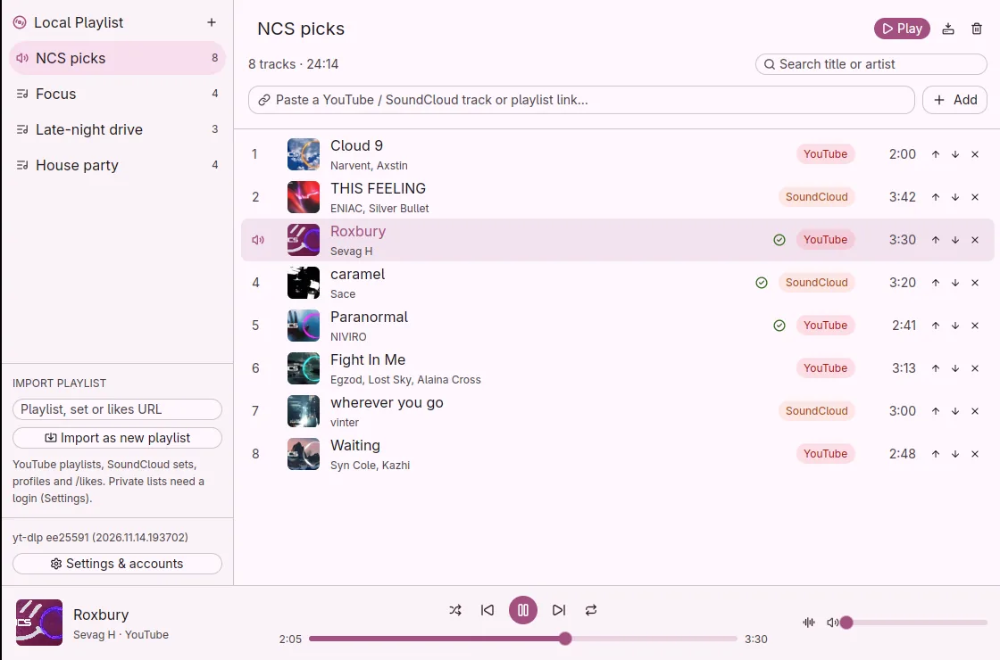
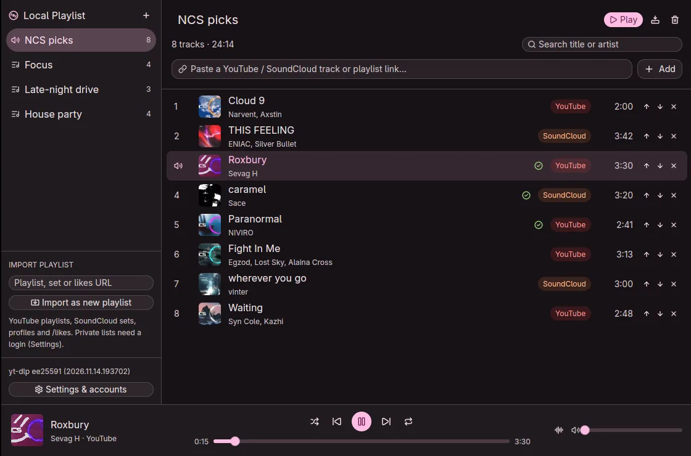
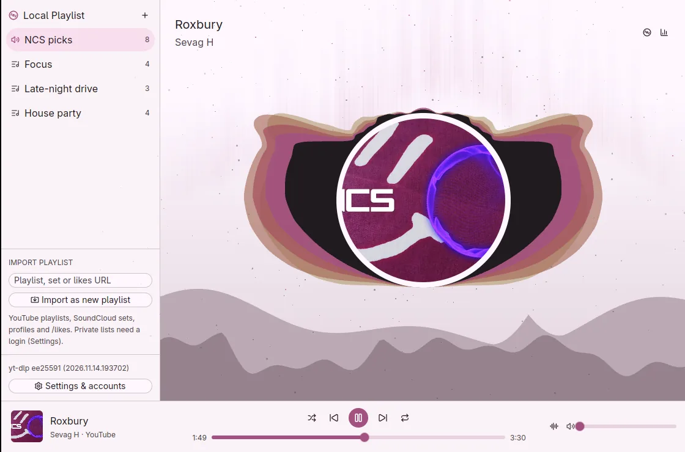
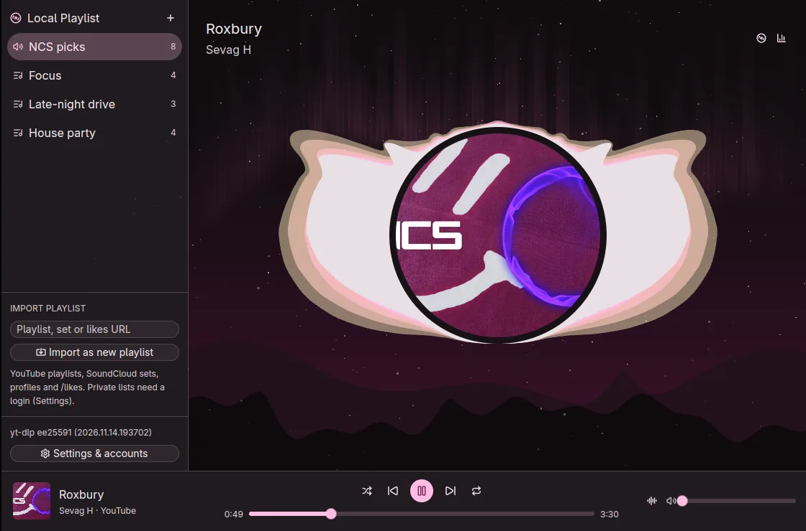
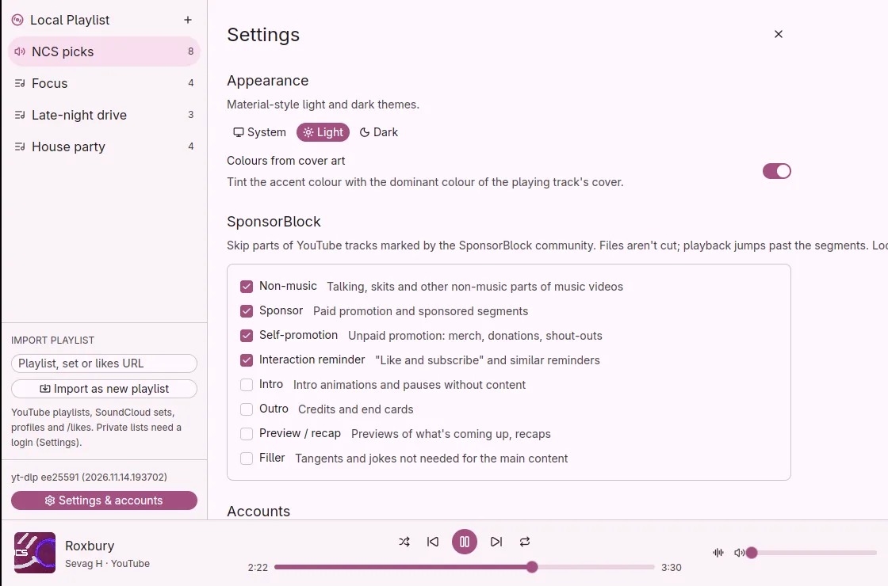
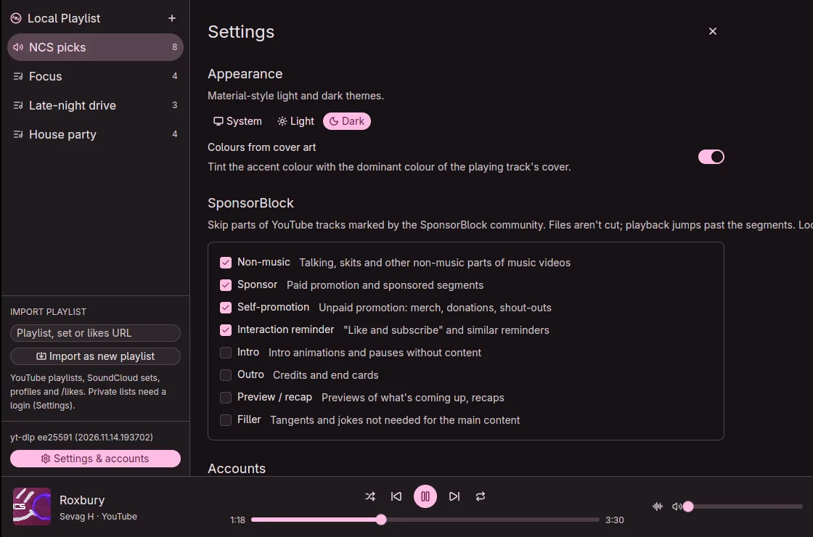

Windows
Download the …-windows-x64.zip, unzip it, and run local-playlist.exe.
Free and open source · Windows and Linux
A music player for links from YouTube, YouTube Music and SoundCloud. Paste links, build playlists that live on your computer, and listen to them in the app, also offline. No account, no ads, no tracking.
Windows and Linux, 64-bit. Or host the web version for any browser.
A clickable preview of the app with placeholder tracks. No audio plays and nothing you type leaves this page.
Nothing playing
Pick a track to see it move
Optional, for private playlists and likes. In the app, logging in opens a small login window; your session stays on your computer, encrypted.
Material-style light and dark themes. (In this demo they change only the preview.)
Colours from cover art
Tint the accent colour with the dominant colour of the playing track's cover.
Skip parts of YouTube tracks marked by the SponsorBlock community: sponsors, self-promotion, "like and subscribe" reminders, intros, outros, recaps, filler and non-music parts. Files aren't cut; playback jumps past the segments.
Music folder: ~/Music/local-playlist · Removed tracks are kept up to 2 GB.
Nothing playing
Click a track to start
Paste a link from any of them. Your playlists live on your computer, not in an account.
YouTube, YouTube Music and SoundCloud tracks side by side. Just paste a link.
From YouTube and YouTube Music, and SoundCloud sets, profiles and likes. Public ones don't need a login.
Music plays while the track is still downloading, and the next one is ready before the current one ends.
Every track is saved as an ordinary audio file, cover included, in your Music folder. It plays without internet and in any other player. "Download all" saves a whole playlist.
With SponsorBlock, talking, sponsors, "like and subscribe" reminders, intros, outros and filler in YouTube videos are skipped. Or turn it off.
Bars, or a circle over a night sky with an aurora, moving with the music.
Material-style themes that take their accent colour from the cover of what's playing.
Removed tracks are kept for a while (up to 2 GB), so adding one back is instant.
For private playlists, YouTube Liked videos, Liked music and Watch later, and your SoundCloud likes.
On first start the app offers to download the two helpers it needs, yt-dlp and QuickJS. yt-dlp is checked against its published checksums.
Run it with Docker and listen from any browser on your network, phones included.
A native Rust app with a GPU-drawn interface. It doesn't run a browser engine: the login window is a separate program, started only when you log in.
The real app on Linux. Screenshots follow this page's theme.






Music in the screenshots: releases by NoCopyrightSounds.
A track, a playlist, a SoundCloud set or someone's likes. The app looks it up through the platform's public web endpoints, the same ones its website uses for logged-out visitors.
Playback starts while yt-dlp downloads the audio, and the next track is fetched before the current one ends.
The file stays in Music/local-playlist/<playlist>/ with its cover embedded. Next time it plays from disk, online or not.
Your playlists are a file on your computer. There's nothing to sign up for and nobody to sell your listening habits to.
Technical detailsFree, for 64-bit Windows and Linux. Every build is on the Releases page.
Download the …-windows-x64.zip, unzip it, and run local-playlist.exe.
Download the …-linux-x64.tar.gz, extract it, and run local-playlist. Needs a recent distribution: Ubuntu 24.04, Debian 13, Fedora 40 or newer. Logging in also needs WebKitGTK 4.1.
Run it on a home server and open it from any browser on your network. Playlists stay in each browser; the server only looks up links and streams the audio.
docker run -d --name local-playlist -p 8080:8080 -v lp-data:/data \
-e LOCAL_PLAYLIST_PASSWORD='a long password' \
ghcr.io/jakeayy/local-playlist:latest
Keep local-playlist-login next to the app: it's the window you log in with.
Pre-releases contain the newest changes and may be less stable.
Want to build it yourself? See CONTRIBUTING.md.
Something not covered? Ask in Discussions.
Yes. It's free and open-source software under the GNU GPL 3.0 (or later). There are no ads, no paid tier and no account.
The desktop app is available for 64-bit Windows and Linux. Linux builds need a recent distribution (glibc 2.39 or newer, for example Ubuntu 24.04, Debian 13 or Fedora 40), and logging in needs WebKitGTK 4.1. There's no macOS download at the moment. Phones, tablets and other computers can use the self-hosted web version in a browser.
Yes. Every track you play is saved as an ordinary audio file (usually M4A) with its cover embedded, in your Music folder under local-playlist/<playlist name>/. It plays without internet, and in any other music player too. "Download all" saves a whole playlist at once.
YouTube and YouTube Music tracks (youtube.com/watch?v=…, youtu.be/…, youtube.com/shorts/…, music.youtube.com/watch?v=…), public or unlisted YouTube playlists, and SoundCloud tracks, sets, albums, a profile's tracks, a profile's public likes and on.soundcloud.com short links. With a login, also private playlists, YouTube Liked videos, Liked music and Watch later, and your own SoundCloud likes.
No. Public tracks and playlists work without logging in, and then no cookies are sent at all. A login is only needed for private playlists and your likes. It stays on your computer, encrypted, with the key in your system keyring, and Log out deletes it.
No. There's no telemetry, analytics or tracking, and your library is a plain file on your computer. The app only connects to YouTube and SoundCloud, SponsorBlock (if turned on) and GitHub (to download its helpers). On systems without a ready-made yt-dlp build it also uses PyPI.
SponsorBlock is a community database of segments in YouTube videos, such as sponsors, talking in music videos and "like and subscribe" reminders. Local Playlist jumps past all of them, intros, outros and filler included; the saved files aren't cut. To keep what you play private, it only sends the first 4 characters of a hash of the video's id. You can turn it off in Settings.
yt-dlp is the open-source tool that downloads the audio, and QuickJS is a small JavaScript engine it needs for YouTube. On first start the app offers to download both (yt-dlp is checked against its published checksums), and Update bundled components in Settings gets their newest versions. You can also use your own copies from the system instead.
No. Local Playlist turns downloads into plain M4A files and embeds the cover by itself. If ffmpeg is installed, it's used for that instead and can also convert the rare tracks without AAC or MP3 audio.
Yes, with the self-hosted web version. Run it on a home server (with Docker, or the server download) and open it in any browser on your network. It's protected by a password and accepts only YouTube and SoundCloud links. Run it on a home connection, since YouTube often blocks servers in data centres, and put it behind HTTPS to use it from outside your network.
YouTube and SoundCloud change things now and then. First use Update bundled components in Settings to get the newest yt-dlp. If it still fails, please open a "site change" issue on GitHub; there's a form for exactly that.
Your library is a plain JSON file, library.json, in the app's data folder (on Linux ~/.local/share/local-playlist/; Settings shows the exact path). The music itself is in your Music folder. Copy both to back them up.
No. Removed tracks are kept in a cache (up to 2 GB by default; you can change the limit in Settings). Add the same link again and it's back instantly, without downloading it again.
No. It's an independent open-source project, not affiliated with or endorsed by Google, YouTube or SoundCloud. Please respect artists' rights and the terms of the services you use.
Local Playlist is made by people in their spare time. Thank you to everyone who has helped.